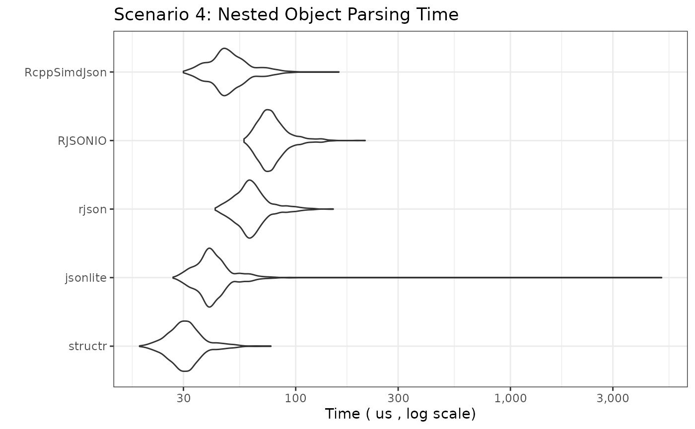
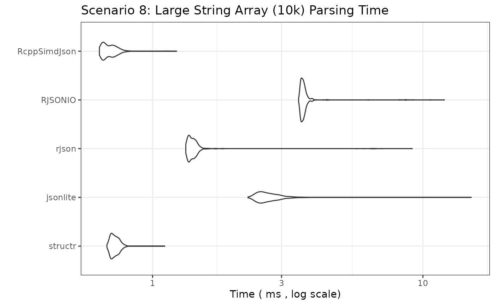
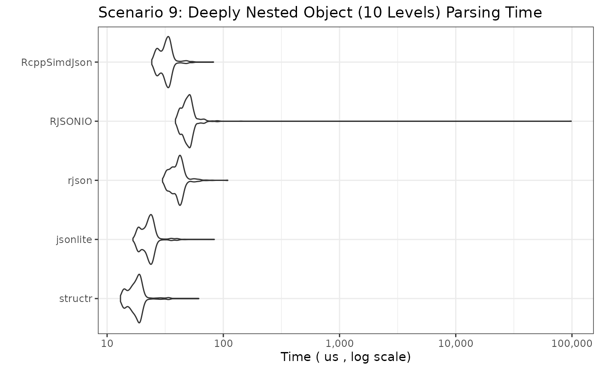

Introduction
This document benchmarks the performance of different R packages for parsing JSON strings into R objects. We compare:
-
structr: Parses JSON and simultaneously validates it against a predefined schema (implemented in Rust usingserdeandsimd-json). -
jsonlite: A widely used, robust JSON parser (implemented in C). -
rjson: Another JSON parser (implemented in C). -
RJSONIO: A versatile JSON parser, often used for interfacing with web APIs (implemented in C). -
RcppSimdJson: A high-performance JSON parser based onsimdjson, which is known for its speed and efficiency (implemented in C++).
The goal is to compare parsing speed across a wider range of JSON structures, from simple atomic values to large arrays and deeply nested objects.
Benchmark Setup
We will test several scenarios representing common and challenging
JSON structures. For structr, we pre-build the required
structure definitions outside the timed benchmark loop, reflecting
typical usage (define the structure once, parse many times).
Disclaimer
If you are reading this vignette on GitHub Pages, the benchmarks ran in GitHub Actions. The results will differ every time they run depending on many factors. If you want a true realistic benchmark, run the code in your own environment.
JSON Data and structr Schemas
The schemas and JSON objects are defined in the source code of this document. Since the values can be long, they are hidden from the final output, however, they are fully available in the source code.
Benchmarking Parameters
# Number of times to run each benchmark expression
# Adjust down for slower scenarios if needed
benchmark_times_fast <- 1000
benchmark_times_medium <- 500
benchmark_times_slow <- 100
# Unit for reporting timings
benchmark_unit_fast <- "us" # microseconds
benchmark_unit_medium <- "ms" # milliseconds
benchmark_unit_slow <- "ms" # millisecondsBenchmark Results
We now run the benchmarks for each scenario. The plots show the
distribution of execution times (lower is better). Note the Y-axis is
often on a logarithmic scale due to potentially large performance
differences. We use check = "equal" or wrap
fromJSON calls in try() for complex cases
where strict equality might fail due to floating point differences or
minor structural variations between parsers, focusing instead on raw
speed.
Scenario 1: Simple Flat Object
bm_simple_object <- microbenchmark(
structr = structr::parse_json(json_simple_object, structr_simple_object),
jsonlite = jsonlite::fromJSON(json_simple_object, simplifyDataFrame = FALSE),
rjson = rjson::fromJSON(json_simple_object),
RJSONIO = RJSONIO::fromJSON(json_simple_object, simplify = FALSE),
RcppSimdJson = RcppSimdJson::fparse(json_simple_object),
times = benchmark_times_fast, unit = benchmark_unit_fast, check = "equal"
)
print_and_plot(bm_simple_object,
title = "Scenario 1: Simple Flat Object Parsing Time",
y_label = paste("Time (", benchmark_unit_fast, ", log scale)")
)## Unit: microseconds
## expr min lq mean median uq max neval
## structr 4.989 7.7940 9.906767 9.8580 11.0660 59.732 1000
## jsonlite 43.831 51.6215 58.689988 55.4490 65.2920 143.909 1000
## rjson 28.904 37.7000 47.067163 42.1430 47.4635 3731.826 1000
## RJSONIO 34.294 44.8685 50.360389 49.1370 54.2310 162.914 1000
## RcppSimdJson 22.092 28.9490 33.366183 32.2105 36.0820 107.991 1000
Scenario 2: Simple Array (Integers, 50 items)
bm_simple_array_int <- microbenchmark(
structr = structr::parse_json(json_simple_array_int, structr_simple_array_int),
jsonlite = jsonlite::fromJSON(json_simple_array_int), # simplify = TRUE default good here
rjson = rjson::fromJSON(json_simple_array_int),
RJSONIO = RJSONIO::fromJSON(json_simple_array_int), # simplify = TRUE default good here
RcppSimdJson = RcppSimdJson::fparse(json_simple_array_int),
times = benchmark_times_fast, unit = benchmark_unit_fast, check = "equal"
)
print_and_plot(bm_simple_array_int,
title = "Scenario 2: Simple Array (Integers) Parsing Time",
y_label = paste("Time (", benchmark_unit_fast, ", log scale)")
)## Unit: microseconds
## expr min lq mean median uq max neval
## structr 3.847 6.0665 7.662411 7.855 8.9820 32.281 1000
## jsonlite 32.681 38.4665 42.054793 41.693 44.3875 105.297 1000
## rjson 32.772 38.1510 43.206272 43.552 46.2820 128.961 1000
## RJSONIO 44.633 53.1990 61.617376 57.532 61.0190 3775.538 1000
## RcppSimdJson 21.740 26.4800 30.135511 30.467 32.6810 76.092 1000
Scenario 3: Simple Array (Strings, 26 items)
bm_simple_array_str <- microbenchmark(
structr = structr::parse_json(json_simple_array_str, structr_simple_array_str),
jsonlite = jsonlite::fromJSON(json_simple_array_str),
rjson = rjson::fromJSON(json_simple_array_str),
RJSONIO = RJSONIO::fromJSON(json_simple_array_str),
RcppSimdJson = RcppSimdJson::fparse(json_simple_array_str),
times = benchmark_times_fast, unit = benchmark_unit_fast, check = "equal"
)
print_and_plot(bm_simple_array_str,
title = "Scenario 3: Simple Array (Strings) Parsing Time",
y_label = paste("Time (", benchmark_unit_fast, ", log scale)")
)## Unit: microseconds
## expr min lq mean median uq max neval
## structr 4.298 6.6525 8.032676 8.2200 9.2270 43.501 1000
## jsonlite 26.669 32.8565 36.452806 35.7470 38.9530 138.749 1000
## rjson 30.617 38.6970 43.426226 42.9255 46.5820 164.327 1000
## RJSONIO 42.350 51.1855 56.598440 55.6440 60.1120 232.204 1000
## RcppSimdJson 22.562 29.8205 38.808722 33.0270 36.6985 5081.154 1000
Scenario 4: Nested Object
bm_nested_object <-
microbenchmark(
structr = structr::parse_json(json_nested_object, structr_nested_object),
jsonlite = jsonlite::fromJSON(json_nested_object, simplifyVector = FALSE),
rjson = rjson::fromJSON(json_nested_object),
RJSONIO = RJSONIO::fromJSON(json_nested_object, simplify = FALSE), # avoid matrix/df conversion
RcppSimdJson = RcppSimdJson::fparse(json_nested_object),
times = benchmark_times_fast, unit = benchmark_unit_fast, check = NULL # Disable check due to potential minor diffs
)
print_and_plot(bm_nested_object,
title = "Scenario 4: Nested Object Parsing Time",
y_label = paste("Time (", benchmark_unit_fast, ", log scale)")
)## Unit: microseconds
## expr min lq mean median uq max neval
## structr 18.736 27.3460 31.32745 30.2915 33.7230 76.672 1000
## jsonlite 26.840 36.7635 46.91324 40.1550 44.7185 5061.427 1000
## rjson 42.169 55.8040 63.76038 61.2995 67.9070 149.576 1000
## RJSONIO 57.437 70.0360 79.15891 75.9920 83.7010 210.573 1000
## RcppSimdJson 29.976 42.9705 50.31556 47.8845 54.9570 158.986 1000
Scenario 5: Array of Simple Objects (100 Objects)
bm_array_of_objects <-
microbenchmark(
structr = structr::parse_json(json_array_of_objects, structr_array_of_objects),
jsonlite = jsonlite::fromJSON(json_array_of_objects, simplifyVector = FALSE, simplifyDataFrame = FALSE), # Force list output
rjson = rjson::fromJSON(json_array_of_objects),
RJSONIO = RJSONIO::fromJSON(json_array_of_objects, simplify = FALSE), # Results in list of lists
RcppSimdJson = RcppSimdJson::fparse(json_array_of_objects),
times = benchmark_times_medium, unit = benchmark_unit_medium, check = NULL
)
print_and_plot(bm_array_of_objects,
title = "Scenario 5: Array of 100 Objects Parsing Time",
y_label = paste("Time (", benchmark_unit_medium, ", log scale)")
)## Unit: milliseconds
## expr min lq mean median uq max neval
## structr 0.199412 0.2329150 0.25422363 0.2504375 0.265245 2.017085 500
## jsonlite 0.120365 0.1522840 0.17143060 0.1596730 0.165464 3.791928 500
## rjson 0.162713 0.1833475 0.21082560 0.2027935 0.218503 0.355935 500
## RJSONIO 0.248263 0.2693580 0.28081374 0.2761205 0.287877 0.506385 500
## RcppSimdJson 0.055603 0.0692740 0.08215516 0.0789675 0.094767 0.191798 500
Scenario 6: Large Array of Simple Objects (1000 Objects)
bm_large_array_of_objects <-
microbenchmark(
structr = structr::parse_json(json_large_array_of_objects, structr_large_array_of_objects),
jsonlite = jsonlite::fromJSON(json_large_array_of_objects, simplifyVector = FALSE, simplifyDataFrame = FALSE),
rjson = rjson::fromJSON(json_large_array_of_objects),
RJSONIO = RJSONIO::fromJSON(json_large_array_of_objects, simplify = FALSE),
RcppSimdJson = RcppSimdJson::fparse(json_large_array_of_objects),
times = benchmark_times_medium,
unit = benchmark_unit_medium,
check = NULL # Disable check
)
print_and_plot(bm_large_array_of_objects,
title = "Scenario 6: Array of 1000 Objects Parsing Time",
y_label = paste("Time (", benchmark_unit_medium, ", log scale)")
)## Unit: milliseconds
## expr min lq mean median uq max neval
## structr 2.265769 2.578804 2.9036278 2.752107 3.0048440 17.525653 500
## jsonlite 1.406956 1.475383 1.5886650 1.538727 1.6026615 6.865344 500
## rjson 1.340402 1.435229 1.6528901 1.487977 1.6257095 8.911183 500
## RJSONIO 2.023657 2.202567 2.3494681 2.261662 2.4152935 9.461571 500
## RcppSimdJson 0.335297 0.362156 0.4459746 0.398183 0.4539875 5.953533 500
Scenario 7: Large Integer Array (10,000 items)
bm_large_array_int <-
microbenchmark(
structr = structr::parse_json(json_large_array_int, structr_large_array_int),
jsonlite = jsonlite::fromJSON(json_large_array_int),
rjson = rjson::fromJSON(json_large_array_int),
RJSONIO = RJSONIO::fromJSON(json_large_array_int),
RcppSimdJson = RcppSimdJson::fparse(json_large_array_int),
times = benchmark_times_medium,
unit = benchmark_unit_medium,
check = "equal"
)
print_and_plot(bm_large_array_int,
title = "Scenario 7: Large Integer Array (10k) Parsing Time",
y_label = paste("Time (", benchmark_unit_medium, ", log scale)")
)## Unit: milliseconds
## expr min lq mean median uq max neval
## structr 0.186648 0.1962810 0.2138085 0.2072770 0.2259120 0.347279 500
## jsonlite 2.301356 2.6336960 2.8455811 2.7374850 2.9012150 8.663511 500
## rjson 1.045953 1.0732380 1.1874971 1.0961815 1.1324645 12.273910 500
## RJSONIO 2.524543 2.5886515 2.7384983 2.6165240 2.6586880 10.160956 500
## RcppSimdJson 0.190897 0.2064355 0.2320636 0.2234775 0.2521605 0.384829 500
Scenario 8: Large String Array (10,000 items)
bm_large_array_str <-
microbenchmark(
structr = structr::parse_json(json_large_array_str, structr_large_array_str),
jsonlite = jsonlite::fromJSON(json_large_array_str),
rjson = rjson::fromJSON(json_large_array_str),
RJSONIO = RJSONIO::fromJSON(json_large_array_str),
RcppSimdJson = RcppSimdJson::fparse(json_large_array_str),
times = benchmark_times_medium,
unit = benchmark_unit_medium,
check = "equal"
)
print_and_plot(bm_large_array_str,
title = "Scenario 8: Large String Array (10k) Parsing Time",
y_label = paste("Time (", benchmark_unit_medium, ", log scale)")
)## Unit: milliseconds
## expr min lq mean median uq max neval
## structr 0.678015 0.7033525 0.7276360 0.7213115 0.7443845 1.108359 500
## jsonlite 2.253456 2.4883650 2.7508679 2.6223450 2.8439930 15.095326 500
## rjson 1.326837 1.3615315 1.4917891 1.3976740 1.4380790 9.131083 500
## RJSONIO 3.469116 3.5474370 3.7232365 3.5966035 3.6607125 11.999147 500
## RcppSimdJson 0.635537 0.6561195 0.6975611 0.6845730 0.7209705 1.227180 500
Scenario 9: Deeply Nested Object (10 levels)
bm_deep_nest <- microbenchmark(
structr = structr::parse_json(json_deep_nest, structr_deep_nest),
jsonlite = jsonlite::fromJSON(json_deep_nest, simplifyVector = FALSE, simplifyDataFrame = FALSE),
rjson = rjson::fromJSON(json_deep_nest),
RJSONIO = RJSONIO::fromJSON(json_deep_nest, simplify = FALSE),
RcppSimdJson = RcppSimdJson::fparse(json_deep_nest),
times = benchmark_times_fast,
unit = benchmark_unit_fast,
check = "equal"
)
print_and_plot(bm_deep_nest,
title = "Scenario 9: Deeply Nested Object (10 Levels) Parsing Time",
y_label = paste("Time (", benchmark_unit_fast, ", log scale)")
)## Unit: microseconds
## expr min lq mean median uq max neval
## structr 13.034 16.0300 18.01704 17.9235 19.2100 61.525 1000
## jsonlite 16.691 20.2680 22.97048 22.8975 24.4655 83.687 1000
## rjson 29.996 36.1730 40.75715 40.7965 43.5065 109.114 1000
## RJSONIO 38.732 45.7200 148.37933 49.3870 52.5685 98471.302 1000
## RcppSimdJson 24.236 28.5635 32.24208 32.2805 34.3595 82.273 1000
Scenario 10: Wide Object (100 fields)
bm_wide_object <- microbenchmark(
structr = structr::parse_json(json_wide_object, structr_wide_object),
jsonlite = jsonlite::fromJSON(json_wide_object, simplifyVector = FALSE, simplifyDataFrame = FALSE),
rjson = rjson::fromJSON(json_wide_object),
RJSONIO = RJSONIO::fromJSON(json_wide_object, simplify = FALSE),
RcppSimdJson = RcppSimdJson::fparse(json_wide_object),
times = benchmark_times_medium,
unit = benchmark_unit_medium,
check = "equal"
)
print_and_plot(bm_wide_object,
title = "Scenario 10: Wide Object (100 Fields) Parsing Time",
y_label = paste("Time (", benchmark_unit_medium, ", log scale)")
)## Unit: milliseconds
## expr min lq mean median uq max neval
## structr 0.061995 0.0742585 0.07999881 0.0787970 0.0837565 0.147165 500
## jsonlite 0.042308 0.0515765 0.05604308 0.0552780 0.0587245 0.133369 500
## rjson 0.063889 0.0745540 0.09702592 0.0807455 0.0856000 7.707186 500
## RJSONIO 0.083105 0.0932540 0.10088961 0.0988540 0.1057275 0.222735 500
## RcppSimdJson 0.033592 0.0416080 0.04810750 0.0476740 0.0527835 0.125875 500